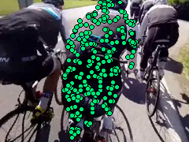
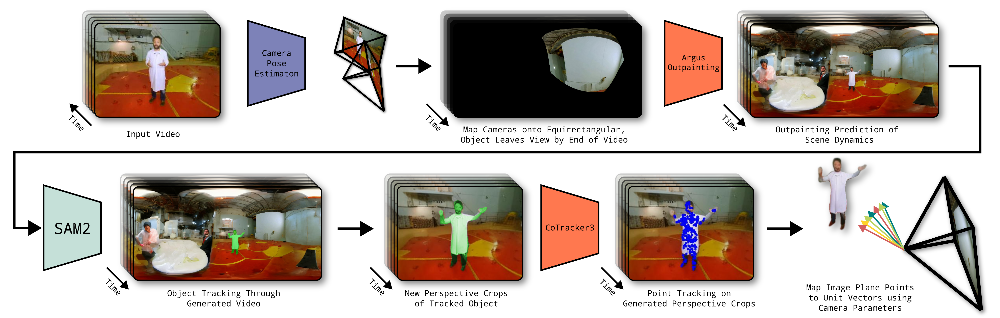
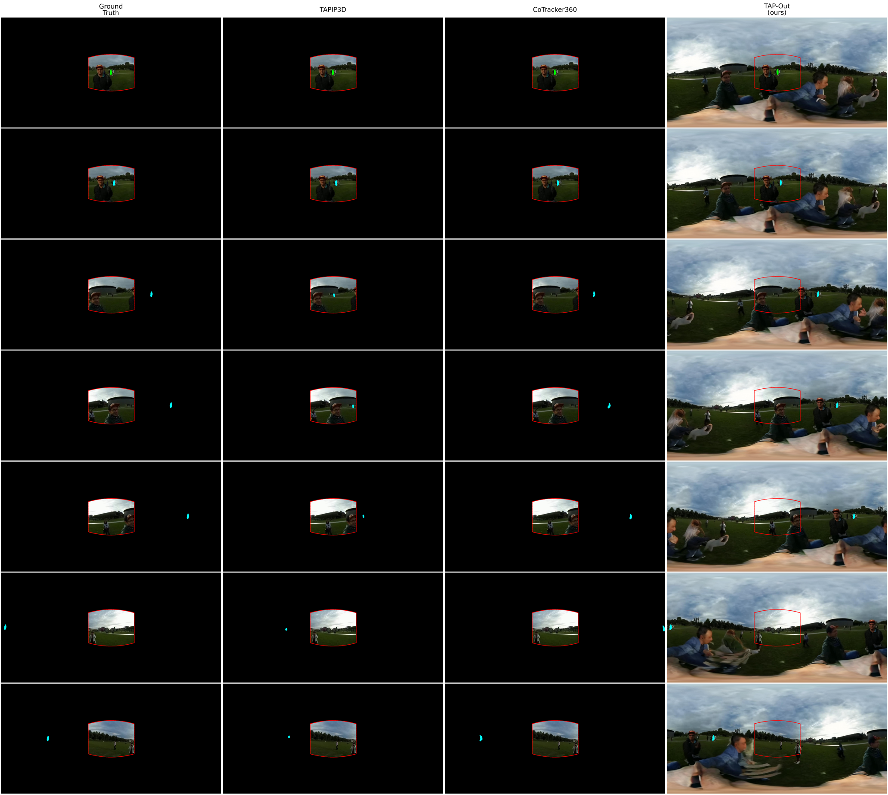
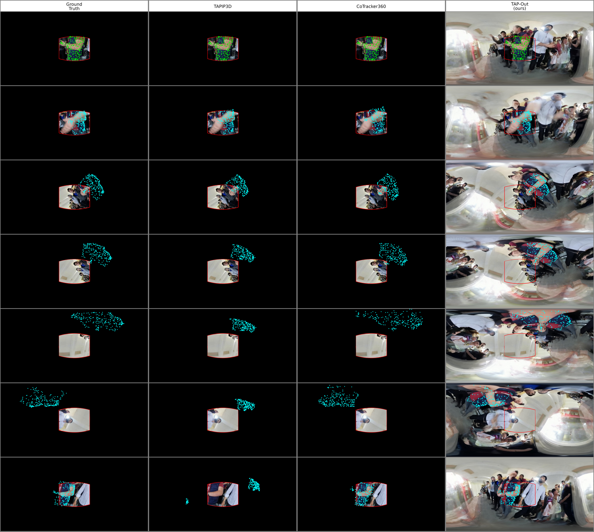
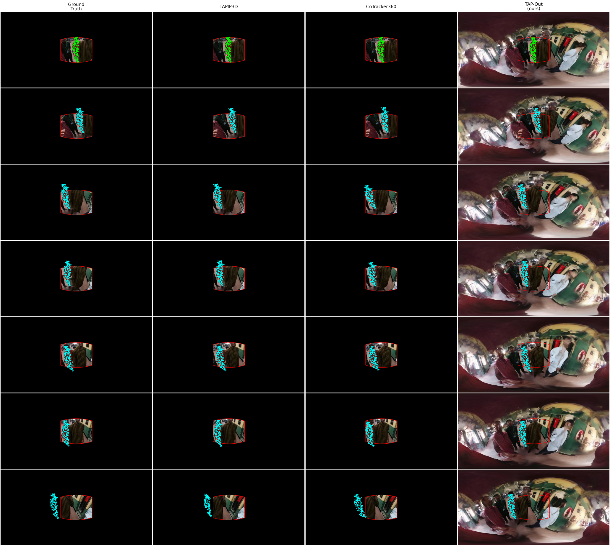
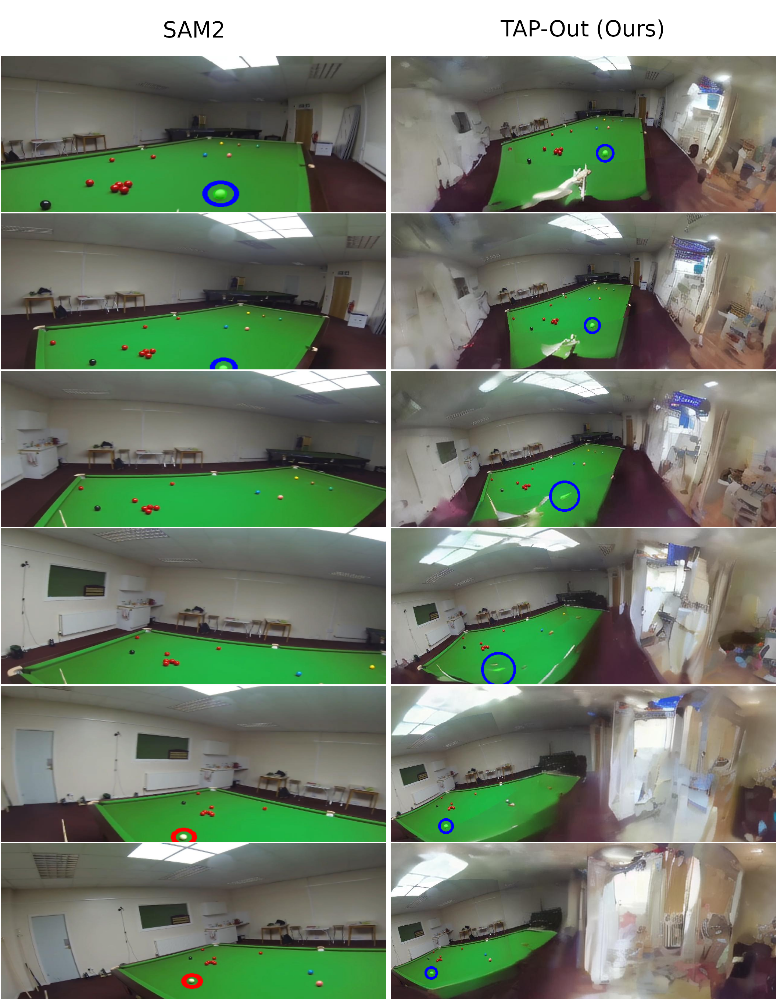
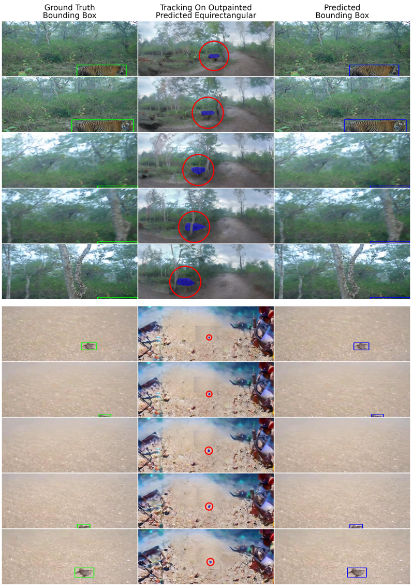

TAP-Out pipeline overview. Camera pose estimation → equirectangular reprojection → Argus 360° scene completion → SAM2 object localisation → object-centred perspective crops → CoTracker3 point tracking → reprojection to unit-sphere directions.
Tracking performance on TAPVid360-TAPOut. Subscripts denote in-frame (if), out-of-frame (oof), and all points (all). TAP-Out with ground-truth cameras achieves state-of-the-art performance across all metrics, with a ~3× improvement on OOV accuracy over the best prior method (CoTracker360).




SAM2 (left) tracks a white snooker ball when visible (blue circles) but fails to re-identify it on return (red circle). TAP-Out (right) maintains continuous localisation in the equirectangular domain.

TAP-Out applied to out-of-frame object tracking on the LaSOT benchmark.
@inproceedings{hudson2026tapout,
title = {TAP-Out: Tracking Any Point in 360$^\circ$ via Outpainting},
author = {Hudson, Finlay G. C. and Gardner, James A. D. and Smith, William A. P.},
booktitle = {Proceedings of the British Machine Vision Conference (BMVC)},
year = {2026}
}